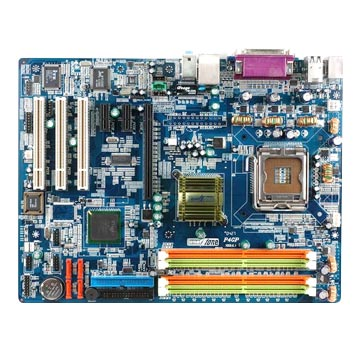
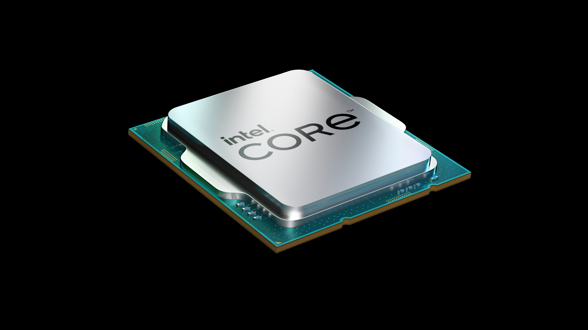
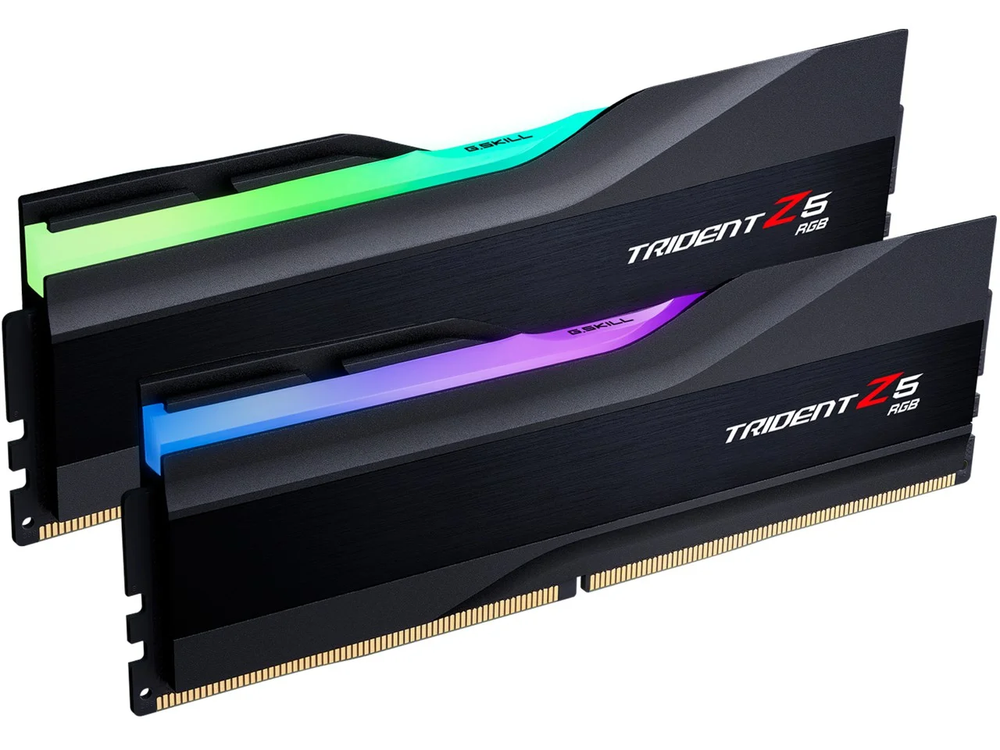
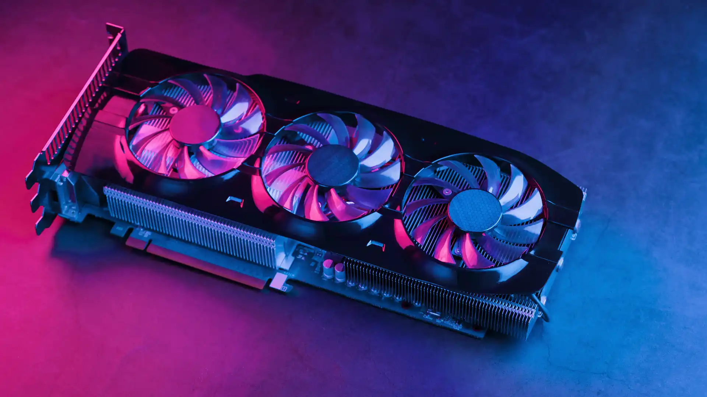

Conheça as Peças do Seu Computador
Placa Mãe
A placa mãe é o componente principal de um computador, onde todos os outros periféricos são conectados. Ela oferece suporte a CPU, memória RAM, e outros dispositivos.
Processador (CPU)
O processador é o cérebro do computador, responsável por executar instruções e realizar cálculos. Ele influencia diretamente no desempenho do sistema.
Memória RAM
A memória RAM armazena temporariamente dados que o processador utiliza. Quanto maior a RAM, melhor a capacidade do computador em lidar com múltiplas tarefas ao mesmo tempo.
Placa de Vídeo (GPU)
A placa de vídeo é responsável pelo processamento gráfico do computador, essencial para jogos, design gráfico, edição de vídeos e mais.
Fonte de Alimentação

A fonte de alimentação converte a energia elétrica para o computador e distribui a voltagem necessária para o funcionamento de todos os componentes.